#code adapted from https://github.com/thomasjpfan/ml-workshop-intermediate-1-of-2import numpy as np
import pandas as pd
import matplotlib.pyplot as plt
import sklearn
import seaborn as sns
sns.set_theme(font_scale=1.2)
plt.rcParams['figure.figsize'] = [12, 8]
plt.rcParams['savefig.bbox'] = 'tight'
plt.rcParams["savefig.dpi"] = 300
sklearn.set_config(display='diagram')Load the dataset
# %load solutions/regression_example.py
import pandas as pd
url = 'https://raw.githubusercontent.com/davidrkearney/Kearney_Data_Science/master/_notebooks/df_panel_fix.csv'
df = pd.read_csv(url, error_bad_lines=False)
df
import sklearn
from sklearn.datasets import fetch_openml
from sklearn.model_selection import train_test_split
df.columns
sklearn.set_config(display='diagram')
df=df.dropna()
df.isnull().sum()
X, y = df.drop(['specific', 'Unnamed: 0'], axis = 1), df['specific']
X = X.select_dtypes(include='number')
X
_ = X.hist(figsize=(30, 15), layout=(5, 8))
X.head()| general | year | gdp | fdi | rnr | rr | i | it | |
|---|---|---|---|---|---|---|---|---|
| 4 | 32100.0 | 2000 | 2902.09 | 31847 | 0.0 | 0.0 | 0.000000 | 1499110 |
| 6 | 66529.0 | 2002 | 3519.72 | 38375 | 0.0 | 0.0 | 0.000000 | 2404936 |
| 7 | 52108.0 | 2003 | 3923.11 | 36720 | 0.0 | 0.0 | 0.000000 | 2815820 |
| 10 | 279052.0 | 2006 | 6112.50 | 139354 | 0.0 | 0.0 | 0.324324 | 5167300 |
| 11 | 178705.0 | 2007 | 7360.92 | 299892 | 0.0 | 0.0 | 0.324324 | 7040099 |
y.head()4 195580.0
6 434149.0
7 619201.0
10 1457872.0
11 2213991.0
Name: specific, dtype: float64Insert random data for demonstration
import numpy as np
X = X.assign(ran_num=np.arange(0, X.shape[0]))Split dataset
from sklearn.model_selection import train_test_split
X_train, X_test, y_train, y_test = train_test_split(
X, y, random_state=42)Train linear model
from sklearn.preprocessing import StandardScaler
from sklearn.linear_model import Ridge
from sklearn.pipeline import Pipeline
ridge = Pipeline([
('scale', StandardScaler()),
('reg', Ridge())
])
ridge.fit(X_train, y_train)Pipeline(steps=[('scale', StandardScaler()), ('reg', Ridge())])StandardScaler()
Ridge()
ridge.score(X_train, y_train)0.8843443502191103ridge.score(X_test, y_test)0.7491370703502245Plot coefficients
Coefficients represent the relationship between a feature and the target assuming that all other features remain constant.
import pandas as pd
import matplotlib.pyplot as plt
def plot_linear_coef(coefs, names, ax=None, sorted=False):
if ax is None:
fig, ax = plt.subplots()
coefs = pd.DataFrame(
coefs, columns=['Coefficients'],
index=names
)
if sorted:
coefs = coefs.sort_values(by='Coefficients')
coefs.plot(kind='barh', ax=ax)
ax.axvline(x=0, color='.5')
return ax
plot_linear_coef(ridge['reg'].coef_, names=X_train.columns, sorted=True);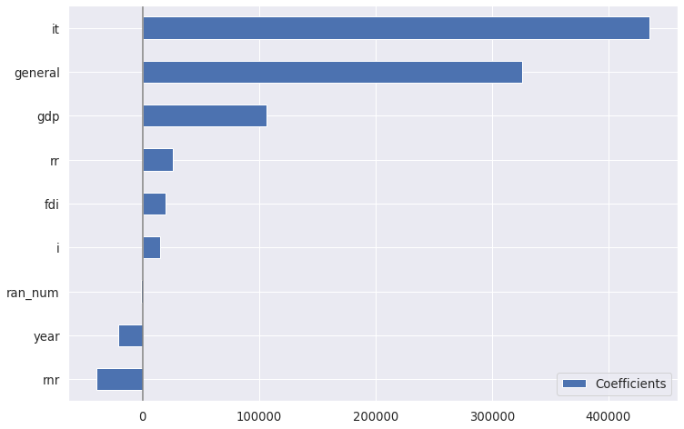
Coefficient variability
from sklearn.model_selection import cross_validate
from sklearn.model_selection import RepeatedKFoldridges_cv = cross_validate(
ridge, X_train, y_train, cv=RepeatedKFold(n_splits=5, n_repeats=5),
return_estimator=True)ridges_cv{'fit_time': array([0.00852752, 0.00879049, 0.00563025, 0.00589609, 0.00541282,
0.00482273, 0.00472617, 0.00440693, 0.00431228, 0.00409317,
0.00431299, 0.003896 , 0.00612736, 0.09311175, 0.00695705,
0.00576901, 0.00550413, 0.00539637, 0.00509334, 0.00491738,
0.00479674, 0.00459194, 0.00439835, 0.00426984, 0.00396895]),
'score_time': array([0.00384283, 0.00219274, 0.00248122, 0.00215101, 0.00219202,
0.00196052, 0.00188565, 0.00182557, 0.00175428, 0.00166225,
0.0016768 , 0.00160766, 0.00199437, 0.00305367, 0.00251174,
0.00237942, 0.00228405, 0.00211263, 0.00204182, 0.00194716,
0.00198007, 0.00189042, 0.00182319, 0.00166941, 0.00160313]),
'estimator': (Pipeline(steps=[('scale', StandardScaler()), ('reg', Ridge())]),
Pipeline(steps=[('scale', StandardScaler()), ('reg', Ridge())]),
Pipeline(steps=[('scale', StandardScaler()), ('reg', Ridge())]),
Pipeline(steps=[('scale', StandardScaler()), ('reg', Ridge())]),
Pipeline(steps=[('scale', StandardScaler()), ('reg', Ridge())]),
Pipeline(steps=[('scale', StandardScaler()), ('reg', Ridge())]),
Pipeline(steps=[('scale', StandardScaler()), ('reg', Ridge())]),
Pipeline(steps=[('scale', StandardScaler()), ('reg', Ridge())]),
Pipeline(steps=[('scale', StandardScaler()), ('reg', Ridge())]),
Pipeline(steps=[('scale', StandardScaler()), ('reg', Ridge())]),
Pipeline(steps=[('scale', StandardScaler()), ('reg', Ridge())]),
Pipeline(steps=[('scale', StandardScaler()), ('reg', Ridge())]),
Pipeline(steps=[('scale', StandardScaler()), ('reg', Ridge())]),
Pipeline(steps=[('scale', StandardScaler()), ('reg', Ridge())]),
Pipeline(steps=[('scale', StandardScaler()), ('reg', Ridge())]),
Pipeline(steps=[('scale', StandardScaler()), ('reg', Ridge())]),
Pipeline(steps=[('scale', StandardScaler()), ('reg', Ridge())]),
Pipeline(steps=[('scale', StandardScaler()), ('reg', Ridge())]),
Pipeline(steps=[('scale', StandardScaler()), ('reg', Ridge())]),
Pipeline(steps=[('scale', StandardScaler()), ('reg', Ridge())]),
Pipeline(steps=[('scale', StandardScaler()), ('reg', Ridge())]),
Pipeline(steps=[('scale', StandardScaler()), ('reg', Ridge())]),
Pipeline(steps=[('scale', StandardScaler()), ('reg', Ridge())]),
Pipeline(steps=[('scale', StandardScaler()), ('reg', Ridge())]),
Pipeline(steps=[('scale', StandardScaler()), ('reg', Ridge())])),
'test_score': array([0.78102813, 0.6260654 , 0.78600362, 0.74219093, 0.97805921,
0.63885999, 0.90069639, 0.86957882, 0.89608878, 0.97272764,
0.83761009, 0.93328631, 0.85460586, 0.47428742, 0.78822307,
0.8933257 , 0.80865875, 0.78604436, 0.66129305, 0.93062503,
0.81909785, 0.86437887, 0.65233286, 0.79389227, 0.96456357])}ridge_coefs = pd.DataFrame(
[model['reg'].coef_ for model in ridges_cv['estimator']],
columns=X.columns
)ridge_coefs.head()| general | year | gdp | fdi | rnr | rr | i | it | ran_num | |
|---|---|---|---|---|---|---|---|---|---|
| 0 | 366170.413056 | -53199.923796 | 29027.500401 | 103838.720536 | -38871.206032 | 21826.179010 | 18730.354007 | 432388.097936 | 15395.947631 |
| 1 | 278344.791911 | 31229.815166 | 105656.219289 | 12157.657371 | -42445.111433 | 33836.845100 | 10283.384018 | 490405.339232 | 138.790062 |
| 2 | 370195.639332 | 4058.337195 | 180433.806468 | -20521.007552 | -46413.645489 | 51399.811179 | -20177.524103 | 315977.584466 | -43552.653962 |
| 3 | 344530.343098 | -33517.706292 | 154739.154793 | -33164.713671 | -22366.886793 | -8720.784251 | 37077.197240 | 464446.608528 | -6371.954113 |
| 4 | 296527.214315 | -41401.308214 | 78119.685147 | 21683.387951 | -41251.611341 | 41388.300696 | 26437.090097 | 418431.007311 | 11901.614954 |
Plotting the variability of the cofficients
fig, ax = plt.subplots()
_ = ax.boxplot(ridge_coefs, vert=False, labels=ridge_coefs.columns)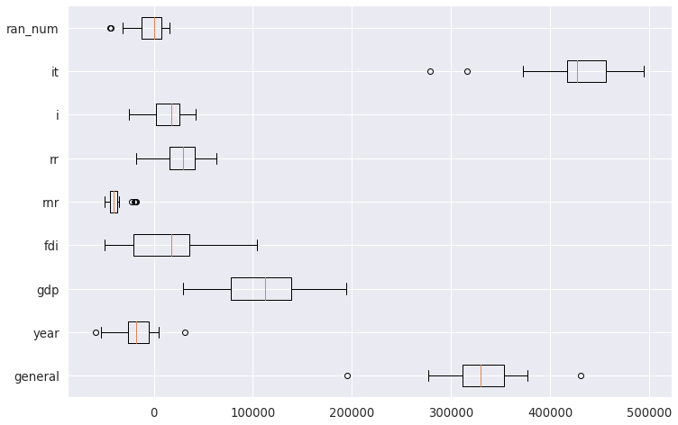
from sklearn.linear_model import Lasso
lasso = Pipeline([
('scale', StandardScaler()),
('reg', Lasso(alpha=0.06))
])lasso.fit(X_train, y_train)Pipeline(steps=[('scale', StandardScaler()), ('reg', Lasso(alpha=0.06))])StandardScaler()
Lasso(alpha=0.06)
fig, (ax1, ax2) = plt.subplots(1, 2, figsize=(18, 9))
plot_linear_coef(lasso['reg'].coef_, names=X_train.columns, sorted=True, ax=ax1);
plot_linear_coef(ridge['reg'].coef_, names=X_train.columns, sorted=True, ax=ax2);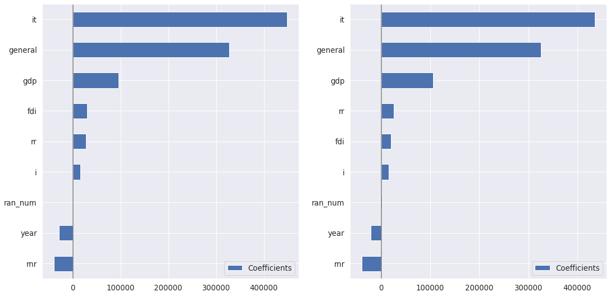
lasso_cvs = cross_validate(
lasso, X_train, y_train, return_estimator=True, cv=RepeatedKFold(n_splits=5, n_repeats=5)
)lasso_coefs = pd.DataFrame(
[model['reg'].coef_ for model in lasso_cvs['estimator']],
columns=X.columns
)fig, ax = plt.subplots()
_ = ax.boxplot(lasso_coefs, vert=False, labels=ridge_coefs.columns)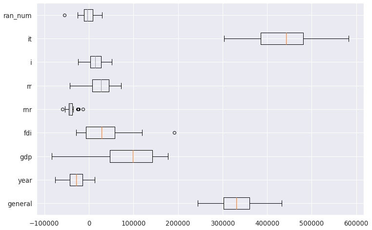
# %load solutions/03-ex01-solutions.py
from sklearn.linear_model import Lasso
lasso = Pipeline([
('scale', StandardScaler()),
('reg', Lasso(random_state=42, alpha=0.04))
])
lasso.fit(X_train, y_train)
lasso.score(X_test, y_test)
fig, (ax1, ax2) = plt.subplots(1, 2, figsize=(16, 8))
plot_linear_coef(ridge['reg'].coef_, X_train.columns, ax=ax1)
plot_linear_coef(lasso['reg'].coef_, X_train.columns, ax=ax2)<AxesSubplot:>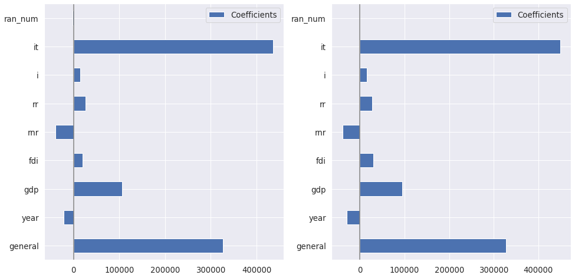
Random Forest
from sklearn.ensemble import RandomForestRegressor
rf = RandomForestRegressor(random_state=42)
rf.fit(X_train, y_train)RandomForestRegressor(random_state=42)
rf.score(X_train, y_train)0.9711219647906122rf.score(X_test, y_test)0.7873539531176165def plot_importances(importances, names, ax=None):
if ax is None:
fig, ax = plt.subplots()
indices = np.argsort(importances)
ax.barh(range(len(importances)), importances[indices])
ax.set(yticks=range(len(importances)),
yticklabels=np.array(names)[indices]);importances = rf.feature_importances_
plot_importances(importances, X_train.columns);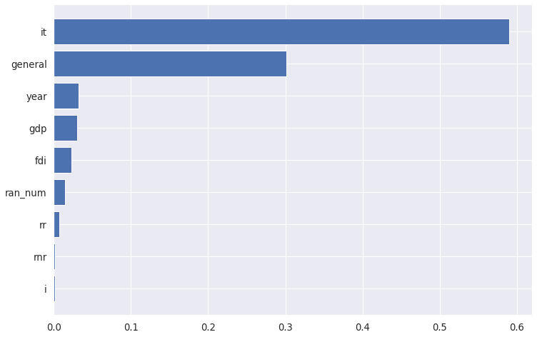
Pay attention to ran_num!
Permutation Feature Importance
Can be used on the test data!
from sklearn.inspection import permutation_importance
rf_perm_results = permutation_importance(rf, X_test, y_test,
n_repeats=10, n_jobs=-1)def plot_permutation_importance(perm_results, names, ax=None):
perm_sorted_idx = perm_results.importances_mean.argsort()
if ax is None:
fig, ax = plt.subplots()
_ = ax.boxplot(perm_results.importances[perm_sorted_idx].T, vert=False,
labels=np.array(names)[perm_sorted_idx])
return ax_ = plot_permutation_importance(rf_perm_results, X_test.columns)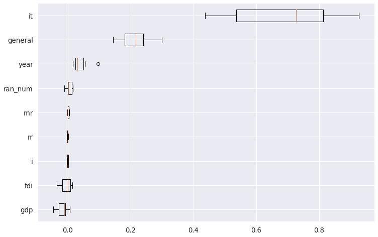
Load cancer dataset
# %load solutions/classifier_example.py
from sklearn.preprocessing import StandardScaler
from sklearn.linear_model import LogisticRegression
from sklearn.pipeline import Pipeline
from sklearn.model_selection import train_test_split
url = 'https://raw.githubusercontent.com/davidrkearney/colab-notebooks/main/datasets/strokes_training.csv'
df = pd.read_csv(url, error_bad_lines=False)
df
df=df.dropna()
df.isnull().sum()
df.columns
sklearn.set_config(display='diagram')
X, y = df.drop(['stroke', 'id'], axis = 1), df['stroke']
X = X.select_dtypes(include='number')
X
X_train, X_test, y_train, y_test = train_test_split(
X, y, stratify=y)
from sklearn.ensemble import RandomForestClassifier
from sklearn.metrics import classification_report
rf = RandomForestClassifier(random_state=42)
rf.fit(X_train, y_train)
rf.score(X_test, y_test)
y_pred = rf.predict(X_test)
print(classification_report(y_test, y_pred)) precision recall f1-score support
0 0.98 1.00 0.99 7131
1 0.00 0.00 0.00 137
accuracy 0.98 7268
macro avg 0.49 0.50 0.50 7268
weighted avg 0.96 0.98 0.97 7268
from sklearn.ensemble import RandomForestClassifier
rf = RandomForestClassifier(random_state=42)
rf.fit(X_train, y_train)RandomForestClassifier(random_state=42)
rf.score(X_test, y_test)0.9808750687947165Permutation importance with random forest
from sklearn.inspection import permutation_importance
rf_result = permutation_importance(rf, X_train, y_train,
n_repeats=10, n_jobs=-1)Training data
_ = plot_permutation_importance(rf_result, X)/home/david/anaconda3/lib/python3.8/site-packages/matplotlib/text.py:1163: FutureWarning: elementwise comparison failed; returning scalar instead, but in the future will perform elementwise comparison
if s != self._text: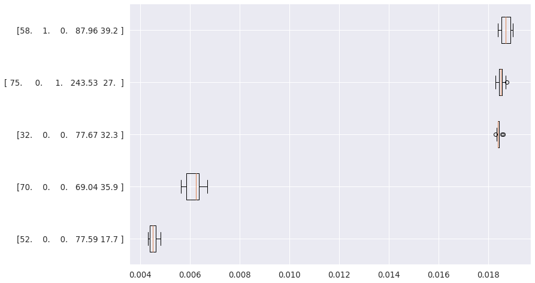
from scipy.stats import spearmanr
from scipy.cluster import hierarchy
corr = spearmanr(X_train).correlation
corr_linkage = hierarchy.ward(corr)
corr_linkagearray([[0. , 1. , 1.05218646, 2. ],
[2. , 5. , 1.20582869, 3. ],
[3. , 4. , 1.24728653, 2. ],
[6. , 7. , 1.38884045, 5. ]])from collections import defaultdict
cluster_ids = hierarchy.fcluster(corr_linkage, 1, criterion='distance')
cluster_id_to_feature_ids = defaultdict(list)
for idx, cluster_id in enumerate(cluster_ids):
cluster_id_to_feature_ids[cluster_id].append(idx)
selected_features = [v[0] for v in cluster_id_to_feature_ids.values()]
selected_features[0, 1, 2, 3, 4]Feature importance with selected features
from sklearn.inspection import permutation_importance
rf_sel_result = permutation_importance(
rf_sel, X_test, y_test, n_repeats=10, n_jobs=-1)features_sel = data.feature_names[selected_features]
_ = plot_permutation_importance(rf_sel_result, features_sel)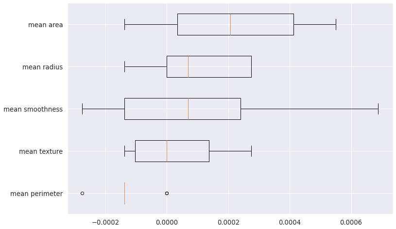
Partial Dependence
Train a HistGradientBostingClassifer
from sklearn.experimental import enable_hist_gradient_boosting
from sklearn.ensemble import HistGradientBoostingClassifier hist = HistGradientBoostingClassifier(random_state=0)
hist.fit(X_train, y_train)HistGradientBoostingClassifier(random_state=0)
# %load solutions/03-ex03-solutions.py
from sklearn.datasets import load_boston
boston = load_boston()
X, y = boston.data, boston.target
X_train, X_test, y_train, y_test = train_test_split(
X, y, random_state=0)
from sklearn.ensemble import GradientBoostingRegressor
gb = GradientBoostingRegressor(random_state=0)
gb.fit(X_train, y_train)
gb.score(X_train, y_train)
plot_importances(gb.feature_importances_, boston.feature_names)
gb_perm_results = permutation_importance(gb, X_test, y_test, n_repeats=10, n_jobs=-1)
plot_permutation_importance(gb_perm_results, boston.feature_names)
plot_partial_dependence(gb, X_test, features=["LSTAT", "RM", "DIS", "CRIM"],
feature_names=boston.feature_names, n_cols=2)
plot_partial_dependence(gb, X_test, features=[('LSTAT', 'RM')],
feature_names=boston.feature_names)<sklearn.inspection._plot.partial_dependence.PartialDependenceDisplay at 0x7f0e9d226dc0>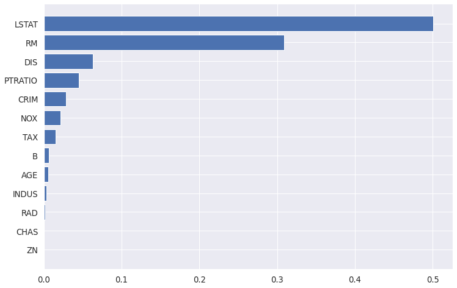
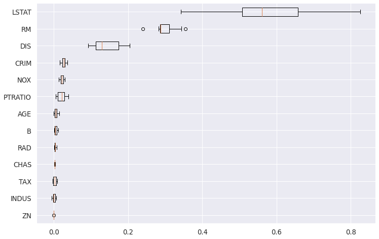
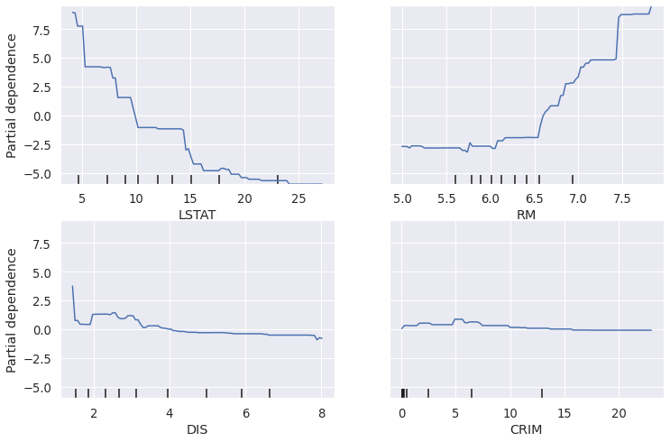
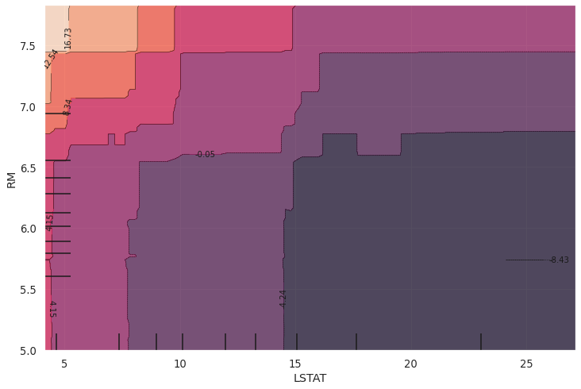